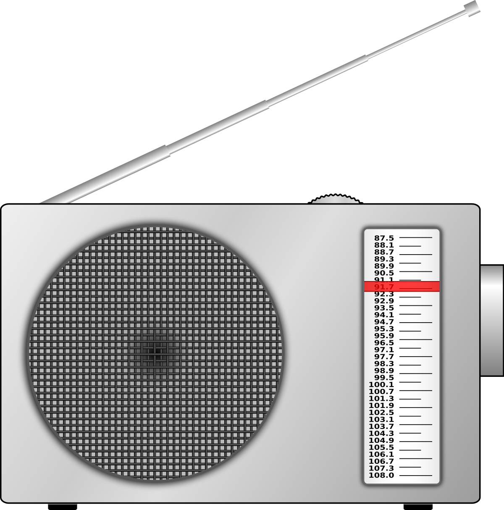
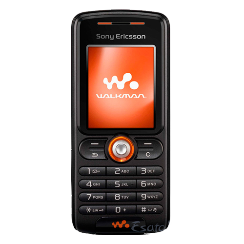

En mi caso, no tuve tanto contacto con las cartas escritas a mano, pero recuerdo las experiencias que me contó
algún día mi abuelita en donde su esposo las usaba para escribirle cuando se tenian lejos, me parece
que este medio es una cosa chevere por el hecho de que en la actualidad solo usamos los medios digitales.
El periodico fue algo más usado en mi vida, ya que, llenaba los crucigramas con mi abuelo y me gustaba leer
los acontecimientos que se trataban allí. Los miraba porque me parecia interesante que pasaran las mismas
cosas o casi todas las mismas cosas que en la television regional.
La radio, me gustaba más, porque cuando no teniamos internet en mi casa todavia, escuchaba la radio y mi
actividad favorita era con un celular pequeñito de teclas, grabar la musica que me gustaba y que pasaban
por la radio y así tener la música que me gustaba en mi celular flechita

La television me gustaba verla con mi mamá, mirabamos novelas y programas como "tambien caeras" o distintos
realitys como: "Quien quiere ser millonario" o "Protagonistas de nuestra tele". El noticiero siempre fue algo
importante en el diarío vivir en cuanto a la tele, ya que solo con ver el anuncio previo de "Bretaña" sabia
que ya iba tarde al colegio.
El telefono fue algo más usado en mi vida, desde los celus pequeñitos que mencione antes, hasta ahora
con la tecnologia más avanzada, mi primer celular fue un Sony Ericcson W200 en donde jugaba un jueguito
de un auto que debia esquivar a otros.

El computador, lo use mucho más para mis tareas o trabajos aunque llegue a tener uno propio hasta el año
2014 en donde vi el mundial de futbol en este, actualmente lo uso para igualmente hacer mis trabajos de la
universidad y practicar otra de mis pasiones que es programar.
Los videojuegos fueron una parte muy grande de mi infancia y de mi presente, mi primer consola de videojuegos
fue el Play Station 2 en donde jugaba con mi papá juegos clasicos de aventura o de carreras como
el need for speed o el god o war. en la actualidad los videojuegos fueron una parte imporante en mi vida en el
año 2020 ya que llegue casi a ser un jugar profesional de un videojuego llamado Valorant.